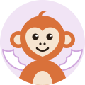

You must be 18 or older. Whatever you show is seen live by another person. Nudity, harassment, and minors are not allowed. Use Report to cut a call and Block to never see that person again. Reports are reviewed; questions go to trommatic@icloud.com.